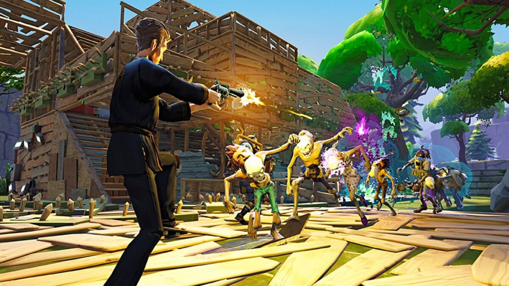
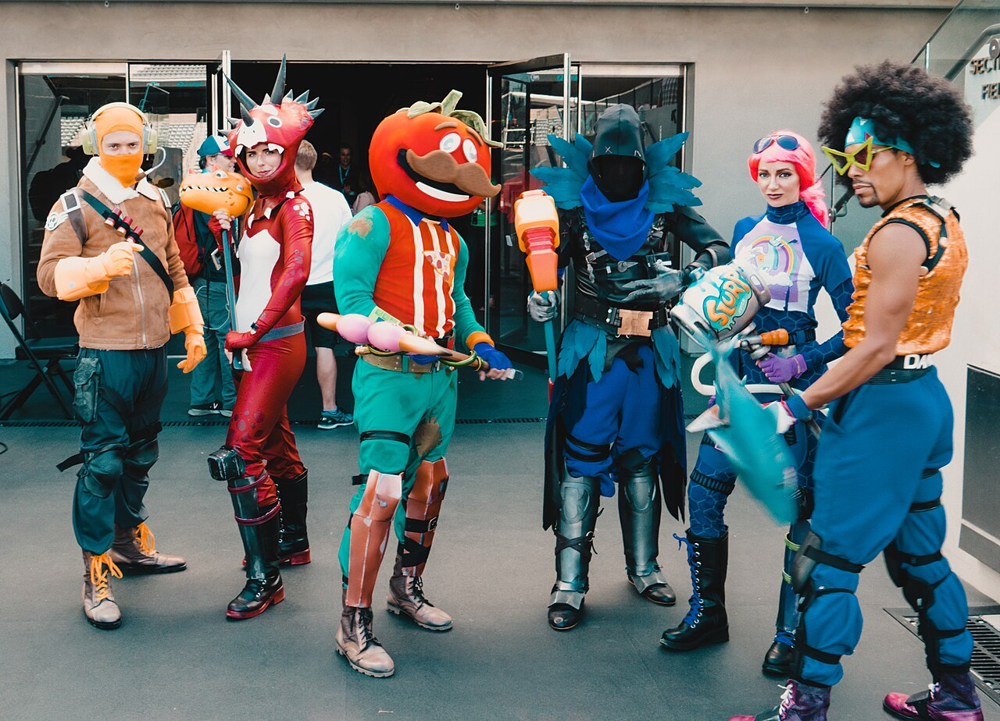
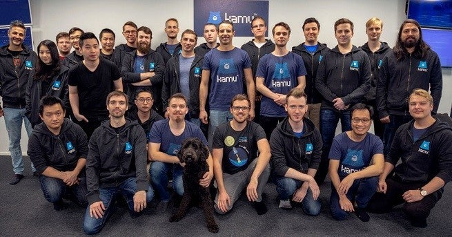
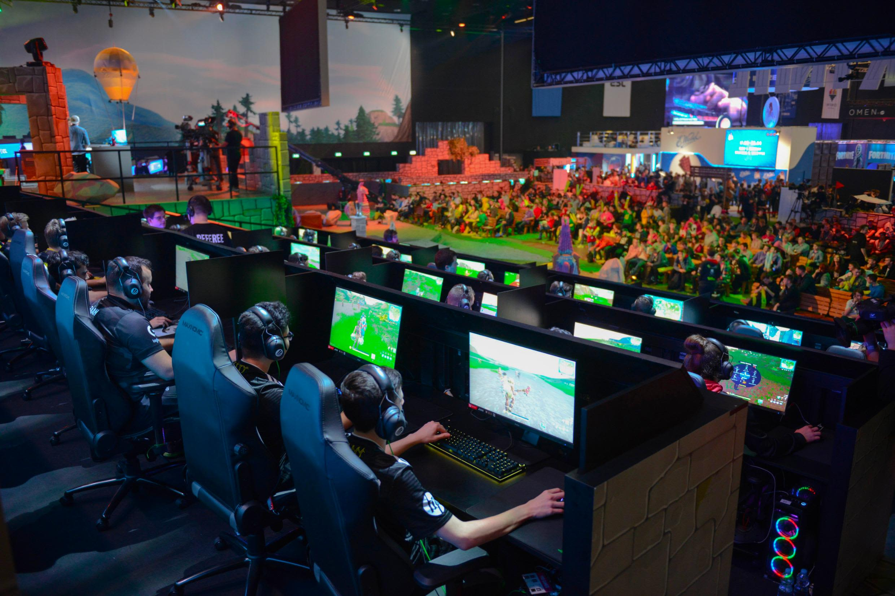
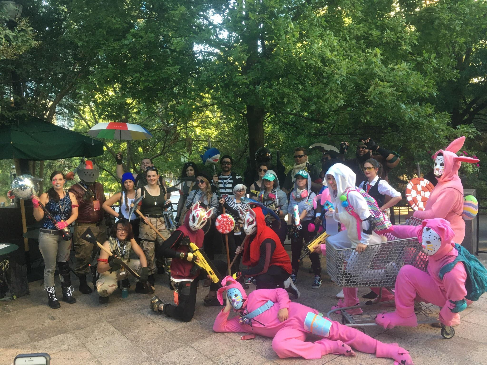
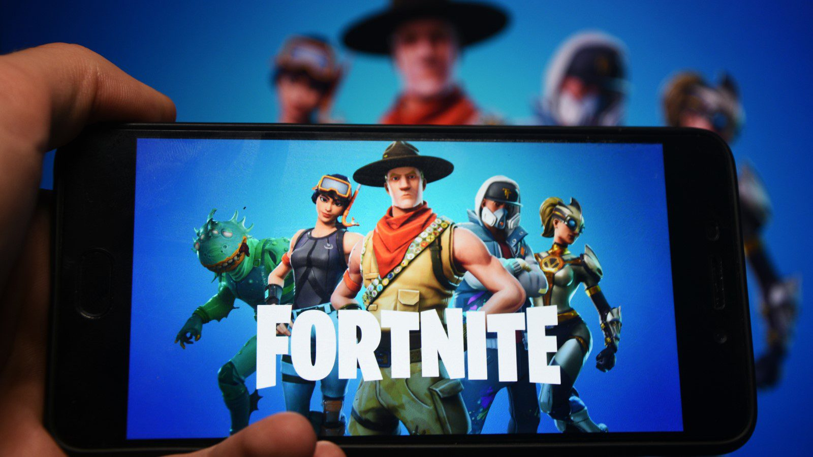

Fortnite: Orígenes y Desarrollo de un Fenómeno de Videojuegos
Fortnite, concebido por Epic Games, emergió como un fenómeno cultural que trascendió los límites del mundo de los videojuegos. Su viaje comenzó con la visión de crear un título único que combinara elementos de supervivencia, construcción y competencia en un mundo en constante evolución.
.jpg)
Orígenes:
Epic Games anunció Fortnite en los Game Awards de 2011, generando expectativas por su enfoque innovador en la jugabilidad y su motor gráfico Unreal Engine 4. El desarrollo inicial se centró en el modo "Salvar el Mundo", una experiencia cooperativa donde los jugadores luchaban contra hordas de zombis. Sin embargo, el juego dio un giro inesperado con la introducción del modo "Battle Royale" en septiembre de 2017. Inspirado en otros títulos del género, como PlayerUnknown's Battlegrounds, Fortnite Battle Royale se destacó gracias a su estilo de arte único, mecánicas de construcción y accesibilidad para jugadores de todas las edades.

Fenómeno Cultural:

Fortnite se convirtió rápidamente en un fenómeno cultural. Su estética colorida, bailes característicos y eventos en vivo capturaron la atención del público más allá de los fanáticos de los videojuegos. La capacidad del juego para adaptarse y evolucionar con el tiempo, introduciendo nuevas temporadas, eventos temáticos y colaboraciones con franquicias populares, contribuyó a su longevidad.
Desarrollo Continuo:

El equipo de desarrollo de Epic Games demostró su compromiso con la mejora continua. Actualizaciones frecuentes, equilibrio de juego y la introducción de modos de juego creativos mantuvieron a los jugadores comprometidos. La implementación de eventos en vivo, como conciertos virtuales y cambios dramáticos en el mapa, elevó la experiencia de juego a un nivel completamente nuevo.
Influencia en los Esports:

Fortnite también dejó una marca significativa en los deportes electrónicos. Torneos masivos, como la Fortnite World Cup, ofrecieron premios millonarios y destacaron a jugadores talentosos de todo el mundo. La visión de Fortnite como plataforma competitiva se consolidó, creando una escena competitiva vibrante y emocionante.
Impacto Social:

El juego se convirtió en un espacio de encuentro virtual para amigos y comunidades. Los bailes de Fortnite se popularizaron en la cultura mainstream, y su impacto se sintió en la educación y el entretenimiento, con profesores utilizando el juego como herramienta pedagógica y celebridades participando en eventos dentro del juego.
Adaptación a Dispositivos Móviles:

La adaptación de Fortnite a dispositivos móviles amplió su alcance. La versión para móviles permitió a los jugadores participar en la acción desde cualquier lugar, consolidando aún más la presencia de Fortnite en la vida cotidiana de millones de personas.
Elaborado por: Rodriguez Ortiz Jorge Angel 6to 23
Escuela Preparatoria No. 1 UAEH
Aplicaciones computacionales web y móviles V2.1
6 de Febrero de 2024